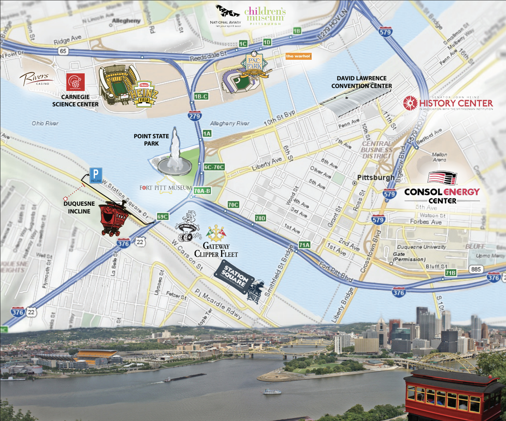

Home
Take a step back in time on a century-old cable car and see the best views of downtown Pittsburgh while riding one of the few remaining inclines in the country.
Take a step back in time on a century-old cable car and see the best views of downtown Pittsburgh while riding
one of the few remaining inclines in the country.
Opened on May 20, 1877, the Duquesne Incline was
rescued and restored by a group of local residents in 1963 and still delights residents and visitors with its
original, elegant, wooden cable cars. Now you can visit the interior of the incline and watch the machinery
while it operates.
The Duquesne Incline's upper station houses a museum of Pittsburgh history,
including photos and a storehouse of information on inclines from around the world. Unusual Pittsburgh
souvenirs, maps and photos can be found at the gift shop.
Informational Video
Duquesne Incline Map
